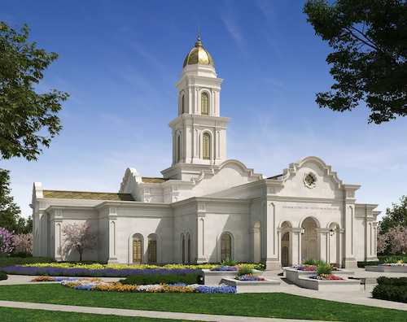
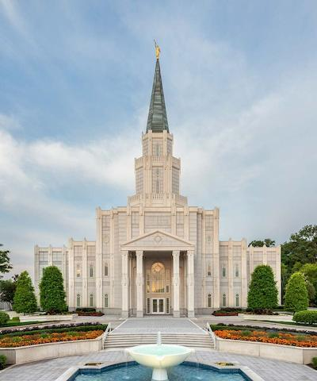
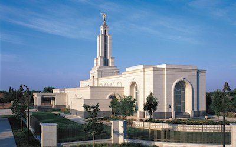

/Google Fonts
My Favorite Temples
Austin Texas Temple
Dallas Texas Temple

Fort Worth Texas Temple
Houston Texas South Temple

Houston Texas Temple

Lubbock Texas Temple
Mcallen Texas Temple
Salt Lake Texas Temple
San Antonio Texas South Temple
Sapporo Japan Temple